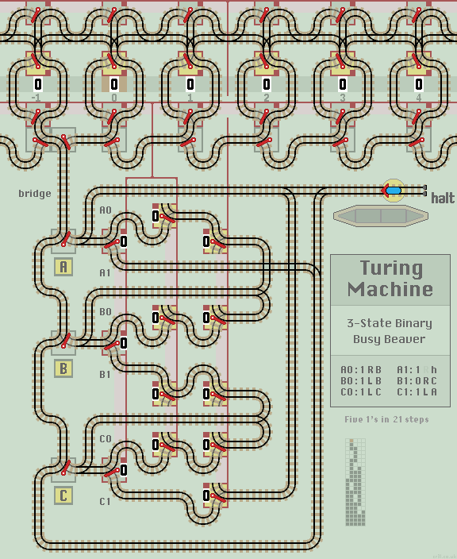

Busy Beaver Turing Machine
A Turing Machine is an idealised computer model that in theory can simulate any computation. There is much information on the web including Wikipedia and this useful introduction.
Turing machines use an unlimited tape, divided into cells, with each cell holding a symbol. The machine can read or write a symbol to a cell, and move either left or right to the next adjacent cell.
The machine stores 3 values:
- Symbol - 0 or 1 for a binary machine.
- Move - Left or Right, to the adjacent cell.
- State - A B or C, and halt.
The machine also has a program, as a list of 'transition rules'. For each combination of State and Symbol, the rule gives updated values for Symbol, Move and State.
eg. Rule (A1: 0 R B) means if the machine is in state A and the Symbol is 1, then update Symbol to 0, Move to Right and enter State B.
When the machine is run, it repeats the following Write, Read and Update operations each step:
- Write the Symbol to the current cell.
- Move to the next adjacent cell.
- Read the Symbol from the cell.
- If the State is 'halt' then Halt the machine. Else...
- Update Symbol, Move and State values.
Busy Beavers
The aim of busy beaver machines is to write as many 1's to the tape as possible, or run the machine for as many steps as possible before halting. These example layouts implement a Busy Beaver using 2 symbols and 3 states. Machines start with Symbol 0, Move Right and State A.
Max 1's
This program produces the known maximum of six 1's (in 14 steps). From the web, the six instructions (for each combination of State and Symbol) are:
(A0: 1 R B) (A1: 1 R h) (B0: 0 R C) (B1: 1 R B) (C0: 1 L C) (C1: 1 L A)
If we run the machine, we find 7 (out of 12) lazy points never alter a value. They are redundant and can be removed. Also, we will not define Move for the halt state. So we end up with:
(A0: 1 R B) (A1: - - h) (B0: - - C) (B1: - - B) (C0: 1 L C) (C1: - - A)
where '-' denotes 'undefined'.
This needs two points for A0 and two points for C0.

|
| Click layout to pause/run train | Click points to switch 0/1 | Click start circle to reset train/points |
| Lazy points switch between upper 0 or lower 1 branch lines Trains arriving on a branch line switch the point to that line |
|
| Sprung points allow branch line trains to join the main line All main line trains go straight ahead and never 'branch off' |
Layout
At the top of the layout is the tape which extends horizontally left and right. Just six cells are shown, with the central cell labelled '0'. Each cell contains a lazy point which holds the Symbol, shown as a 0 or a 1.
Above them is a row of linked lazy points which select Left or Right, and below is a similar row of linked lazy points which hold the Symbol to be written into or just read out of the cell. At the bottom of the tape is a row of passive points which direct the train back to the current cell.
When the train enters a cell, it writes the Symbol into the cell, then moves Left or Right to read out the Symbol in the adjacent cell.
Below the tape, connected by a single track bridge, is the main layout. On the left are the State points. Outputs A0 and C0 set both Symbol and Move values. On the right, the train is routed back to select the next State.
Operation
Reset all points (click train on start circle) before each new run. The train leaves the station and sets the State Switch to A. It proceeds to the tape where the passive points guide the train to read the value from the central cell.
On returning to the central State Switch the train updates Symbol and Move values before updating the State Switch with the new State.
The yellow lazy points can be clicked to switch, although Turing Machines just run until the train returns to the station and halts.
Max Steps
This similar layout produces five 1's in 21 steps, which is a maximum run. The right most cell is unused. From the web, the six instructions (for each combination of State and Symbol) are:
(A0: 1 R B) (A1: 1 R h) (B0: 1 L B) (B1: 0 R C) (C0: 1 L C) (C1: 1 L A)
If we run the machine, we find 2 (out of 12) lazy points never alter a value. They are redundant and can be removed. Also, we will not define Move for the halt state. So we end up saving 3 points:
(A0: 1 R B) (A1: - - h) (B0: 1 L B) (B1: 0 R C) (C0: 1 L C) (C1: - L A)
where '-' denotes 'undefined'.
| 
|
| Click layout to pause/run train | Click points to switch 0/1 | Click start circle to reset train/points |
| Lazy points switch between upper 0 or lower 1 branch lines Trains arriving on a branch line switch the point to that line |
|
| Sprung points allow branch line trains to join the main line All main line trains go straight ahead and never 'branch off' |